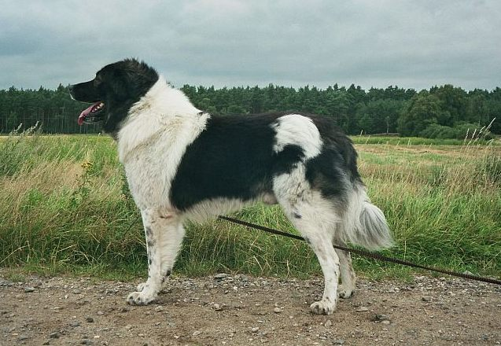

Домашно куче
Кучетата са средноголеми бозайници, подвид на вълците (Canis lupus), опитомен още от зората на човечеството.Едни от първите домашни животни, кучетата се използват широко по целия свят и играят важна роля в ранните човешки селища. Благодарение на специфичните им природни особености (остър слух, чувствително обоняние), кучетата се използват и за много други цели, като лов, в пасищното животновъдство, за храна и защита, като домашни любимци. Днес броят на домашните кучета по света се оценява на 400 милиона.
 Като повечето бозайници кучетата са дихроматични и имат цветно зрение еквивалентно на нарушено цветозрение червено-зелено при хората.Различните породи кучета имат различна форма и размер на очите, а имат и различна конфигурация на ретината. Кучетата с дълги носове имат високочувствителна област от ретината („visual streak“), която се простира по дължината на ретината и им придава много широко поле на зрение, докато тези с къси носове имат „area centralis“ — централна област с до три пъти по-голяма чувствителност на нервните окончания отколкото „visual streak“ — давайки им детайлно зрение приличащо на човешкото.Някои породи имат поле на зрение до 270° (сравнено с 180° при хората), въпреки че породите с широки глави и къси носове имат много по-малко поле, достигащо 180°.